Tuning curves#
With Pynapple you can easily compute n-dimensional tuning curves (for example, firing rate as a function of 1D angular direction or firing rate as a function of 2D position). It is also possible to compute average firing rate for different epochs (for example, firing rate for different epochs of stimulus presentation).
From timestamps or continuous activity#
Computing tuning curves is done using compute_tuning_curves.
When computing from general time-series, mandatory arguments are:
data: aTsGroup(or singleTs) orTsdFrame(or singleTsd) containing the neural activity of one or more units.features: aTsdorTsdFramecontaining one or more features.
By default, 10 bins are used for all features, but you can specify the number of bins,
or the bin edges explicitly, using the bins argument.
The min and max of the tuning curves are by default the minima and maxima of the features.
This can be tweaked with the range argument.
If an IntervalSet is passed with epochs, everything is restricted to epochs,
otherwise the time support of the features is used.
If you do not want the sampling rate of the features to be estimated from the timestamps,
you can pass it explicitly using the fs argument.
You can further also pass a list of strings to label each dimension via feature_names
(by default the columns of the features are used).
The output is an xarray.DataArray in which the first dimension represents the units and further dimensions represent the features.
The occupancy and bin edges are stored as attributes.
If you explicitly want a pd.DataFrame as output (which is only possible when you have just the one feature),
you can set return_pandas=True. Note that this will not return the occupancy and bin edges.
1D tuning curves from spikes#
We will start by simulating some spiking units modulated by a 1D circular variable:
# Feature
T = 500
dt_feature = 0.02
times_feature = np.arange(0, T, dt_feature)
feature = nap.Tsd(
t=times_feature, d=np.pi + np.pi * np.cos(2 * np.pi * times_feature / 10)
)
# Spikes
N = 6
max_rate = 20
dt_spikes = 0.002
feature_interp = feature.interpolate(nap.Ts(np.arange(0, T, dt_spikes)))
centers = np.linspace(0, 2 * np.pi, N, endpoint=False)
rates = max_rate * np.exp(
-10 * (np.sin((feature_interp.d[:, np.newaxis] - centers) / 2)) ** 2
)
tsgroup_1d = nap.TsGroup(
{
i + 1: nap.Ts(
feature_interp.t[np.random.poisson(rates[:, i] * dt_spikes) > 0]
)
for i in range(N)
},
)
We now have all the ingredients to compute tuning curves:
tuning_curves_1d = nap.compute_tuning_curves(
data=tsgroup_1d,
features=feature,
bins=120,
range=(0, 2*np.pi),
feature_names=["feature"]
)
tuning_curves_1d
<xarray.DataArray (unit: 6, feature: 120)> Size: 6kB
array([[19.31034483, 20.41666667, 15.6 , 17.75 , 16.33333333,
17.66666667, 15.16666667, 13.83333333, 9.83333333, 9.25 ,
12.5 , 10.5 , 6.5 , 5.75 , 3.5 ,
5.25 , 3.75 , 3. , 2.25 , 0. ,
0.75 , 1.25 , 2. , 0.5 , 0.5 ,
0.25 , 0.5 , 0.25 , 0. , 0. ,
0. , 0.25 , 0. , 0. , 0.5 ,
0.25 , 0. , 0. , 0. , 0. ,
0. , 0. , 0. , 0. , 0. ,
0. , 0. , 0. , 0. , 0. ,
0. , 0. , 0. , 0. , 0. ,
0. , 0. , 0. , 0. , 0. ,
0. , 0. , 0. , 0. , 0. ,
0. , 0. , 0. , 0. , 0. ,
0. , 0. , 0. , 0. , 0. ,
0. , 0. , 0. , 0. , 0. ,
0. , 0. , 0. , 0. , 0. ,
0. , 0. , 0. , 0.25 , 0. ,
0. , 0.5 , 0. , 0. , 0.75 ,
0.75 , 0. , 0.75 , 1. , 0.75 ,
...
0. , 0. , 0. , 0. , 0. ,
0. , 0. , 0. , 0. , 0. ,
0. , 0. , 0. , 0. , 0. ,
0. , 0. , 0. , 0. , 0. ,
0. , 0. , 0. , 0. , 0. ,
0. , 0. , 0. , 0. , 0. ,
0. , 0. , 0. , 0. , 0. ,
0. , 0. , 0. , 0. , 0. ,
0. , 0. , 0. , 0. , 0. ,
0. , 0.25 , 0. , 0. , 0. ,
0. , 0.25 , 0. , 0.5 , 1. ,
0.5 , 1.5 , 0.5 , 1.5 , 1.5 ,
2.5 , 3. , 2.5 , 4. , 4.25 ,
5. , 6. , 11. , 7.75 , 7.5 ,
9. , 12.5 , 14.25 , 16. , 18. ,
14.5 , 21. , 16.75 , 16.25 , 16.25 ,
24.5 , 20. , 19.75 , 15.25 , 19.25 ,
15.5 , 13. , 14.5 , 13.16666667, 11. ,
10.25 , 8.16666667, 8.33333333, 4. , 3.5 ,
4.66666667, 5. , 3. , 1.66666667, 1.34482759]])
Coordinates:
* unit (unit) int64 48B 1 2 3 4 5 6
* feature (feature) float64 960B 0.02618 0.07854 0.1309 ... 6.152 6.205 6.257
Attributes: (4)The xarray.DataArray can be treated like a numpy array.
It has a shape:
tuning_curves_1d.shape
(6, 120)
It can be sliced:
tuning_curves_1d[1, 2:8]
<xarray.DataArray (feature: 6)> Size: 48B
array([2.9 , 3.375 , 5.33333333, 6.33333333, 5.33333333,
6.66666667])
Coordinates:
* feature (feature) float64 48B 0.1309 0.1833 0.2356 0.288 0.3403 0.3927
unit int64 8B 2
Attributes: (4)It can also be indexed using the coordinates:
tuning_curves_1d.sel(unit=1)
<xarray.DataArray (feature: 120)> Size: 960B
array([19.31034483, 20.41666667, 15.6 , 17.75 , 16.33333333,
17.66666667, 15.16666667, 13.83333333, 9.83333333, 9.25 ,
12.5 , 10.5 , 6.5 , 5.75 , 3.5 ,
5.25 , 3.75 , 3. , 2.25 , 0. ,
0.75 , 1.25 , 2. , 0.5 , 0.5 ,
0.25 , 0.5 , 0.25 , 0. , 0. ,
0. , 0.25 , 0. , 0. , 0.5 ,
0.25 , 0. , 0. , 0. , 0. ,
0. , 0. , 0. , 0. , 0. ,
0. , 0. , 0. , 0. , 0. ,
0. , 0. , 0. , 0. , 0. ,
0. , 0. , 0. , 0. , 0. ,
0. , 0. , 0. , 0. , 0. ,
0. , 0. , 0. , 0. , 0. ,
0. , 0. , 0. , 0. , 0. ,
0. , 0. , 0. , 0. , 0. ,
0. , 0. , 0. , 0. , 0. ,
0. , 0. , 0. , 0.25 , 0. ,
0. , 0.5 , 0. , 0. , 0.75 ,
0.75 , 0. , 0.75 , 1. , 0.75 ,
3. , 1. , 2. , 3. , 4.75 ,
4.25 , 6. , 11.5 , 8.16666667, 10.5 ,
9.75 , 12. , 14.66666667, 13.5 , 19.16666667,
18. , 19.5 , 17.1 , 18.16666667, 18.44827586])
Coordinates:
* feature (feature) float64 960B 0.02618 0.07854 0.1309 ... 6.152 6.205 6.257
unit int64 8B 1
Attributes: (4)xarray further has matplotlib
support, allowing for easy visualization:
tuning_curves_1d.plot.line(x="feature", add_legend=False)
plt.ylabel("firing rate [Hz]");
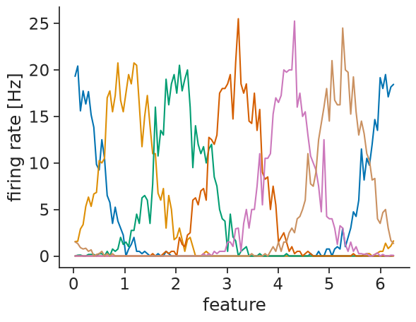
You can either customize the plot labels yourself using matplotlib,
or you can set them in the tuning curve object:
tuning_curves_1d.name = "firing rate"
tuning_curves_1d.attrs["unit"] = "Hz"
tuning_curves_1d.coords["feature"].attrs["unit"] = "rad"
tuning_curves_1d.plot.line(x="feature", add_legend=False);
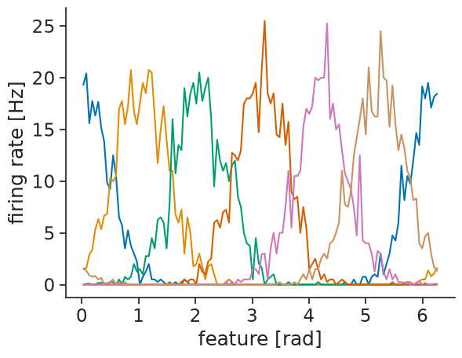
Internally, the compute_tuning_curves calls the value_from method which maps timestamps to their closest values in time from a Tsd object.
It is then possible to validate the tuning curves by displaying the timestamps as well as their associated values.
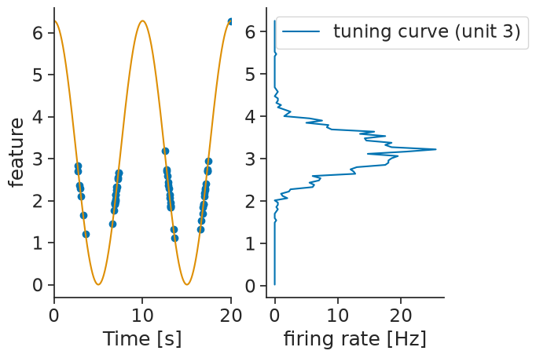
It is also possible to just get the spike counts per bins. This can be done by setting the argument return_counts=True.
The output is also a xarray.DataArray with the same dimensions as the tuning curves.
spike_counts = nap.compute_tuning_curves(
data=tsgroup_1d,
features=feature,
bins=30,
range=(0, 2*np.pi),
feature_names=["feature"],
return_counts=True
)
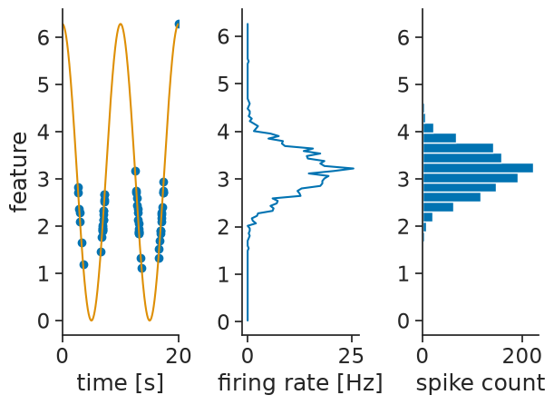
2D tuning curves from spikes#
Now, let us simulate some spiking units modulated by a 2D circular variable:
features = nap.TsdFrame(
t=times_feature,
d=np.stack(
[
np.cos(2 * np.pi * times_feature / 10),
np.sin(2 * np.pi * times_feature / 10),
],
axis=1,
),
columns=["a", "b"],
)
features_interp = features.interpolate(nap.Ts(np.arange(0, T, dt_spikes)))
alpha = (
np.arctan2(features_interp["b"].values, features_interp["a"].values)
/ np.pi
)
N = 6
centers_2d = np.linspace(-1, 1, N)
rates_2d = (
max_rate
* np.exp(50.0 * np.cos(alpha[:, np.newaxis] - centers_2d))
/ np.exp(50.0)
)
tsgroup_2d = nap.TsGroup(
{
i + 1: nap.Ts(
features_interp.t[
np.random.poisson(rates_2d[:, i] * dt_spikes) > 0
]
)
for i in range(N)
},
)
If you pass more than 1 feature, a multi-dimensional tuning curve is computed:
tuning_curves_2d = nap.compute_tuning_curves(
data=tsgroup_2d,
features=features,
bins=(5,5),
range=[(-1, 1), (-1, 1)],
feature_names=["a", "b"]
)
tuning_curves_2d
<xarray.DataArray (unit: 6, a: 5, b: 5)> Size: 1kB
array([[[ 4.54545455, 12.37142857, 8.93939394, 0. ,
0. ],
[ 1. , nan, nan, nan,
0. ],
[ 0.06060606, nan, nan, nan,
0. ],
[ 0. , nan, nan, nan,
0. ],
[ 0. , 0. , 0. , 0. ,
0. ]],
[[11.72727273, 4.45714286, 0.39393939, 0. ,
0. ],
[17.54285714, nan, nan, nan,
0. ],
[14.45454545, nan, nan, nan,
0. ],
[ 4.88571429, nan, nan, nan,
0. ],
[ 1.18181818, 0.05714286, 0. , 0. ,
...
12. ],
[ 0. , nan, nan, nan,
18.17142857],
[ 0. , nan, nan, nan,
14.45454545],
[ 0. , nan, nan, nan,
4.71428571],
[ 0. , 0. , 0. , 0.11428571,
0.81818182]],
[[ 0. , 0. , 9.54545455, 12.22857143,
4.86363636],
[ 0. , nan, nan, nan,
0.97142857],
[ 0. , nan, nan, nan,
0.12121212],
[ 0. , nan, nan, nan,
0. ],
[ 0. , 0. , 0. , 0. ,
0. ]]])
Coordinates:
* unit (unit) int64 48B 1 2 3 4 5 6
* a (a) float64 40B -0.8 -0.4 1.11e-16 0.4 0.8
* b (b) float64 40B -0.8 -0.4 1.11e-16 0.4 0.8
Attributes: (4)tuning_curve_2d is a again an xarray.DataArray but now with three dimensions:
one for the units of TsGroup and 2 for the features, the coordinates contain the centers of the bins.
Bins that have never been visited by the feature have been assigned a NaN value.
Two-dimensional tuning curves can also easily be visualized:
tuning_curves_2d.name="firing rate"
tuning_curves_2d.attrs["unit"]="Hz"
tuning_curves_2d.plot(col="unit", col_wrap=3);
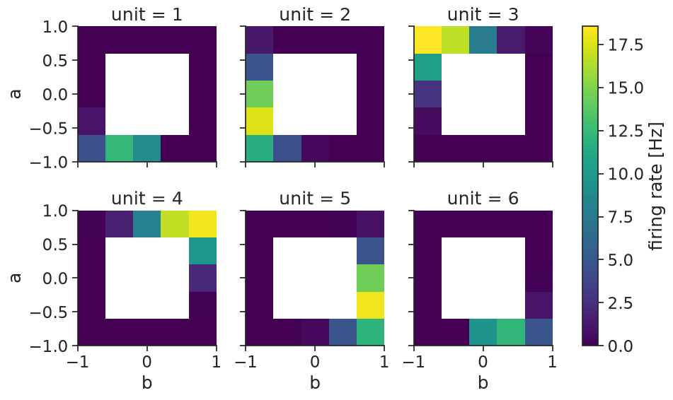
Verifying the accuracy of the tuning curves can once more be done by displaying the spikes aligned
to the features with the function value_from which assign to each spikes the corresponding features value for unit 0.
ts_to_features = tsgroup_2d[1].value_from(features)
ts_to_features
Time (s) a b
------------------ --------- ---------
5.186 -0.993611 -0.112856
5.194 -0.992115 -0.125333
5.316 -0.979855 -0.19971
5.428 -0.965382 -0.260842
5.466 -0.958522 -0.285019
5.532 -0.942991 -0.33282
5.598 -0.929776 -0.368125
...
495.432 -0.962028 -0.272952
495.6 -0.929776 -0.368125
495.796 -0.876307 -0.481754
496.194 -0.728969 -0.684547
496.278 -0.693653 -0.720309
496.51800000000003 -0.577573 -0.816339
496.63800000000003 -0.51444 -0.857527
dtype: float64, shape: (865, 2)
tsgroup[0] which is a Ts object has been transformed to a TsdFrame object with each timestamps (spike times) being associated with a features value.
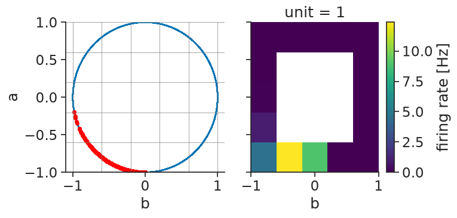
1D tuning curves from continuous activity#
We do not always have spikes. Sometimes we are analysing continuous firing rates or calcium intensities. As an example, we will simulate noisy continuous activity for some units modulated by the 1D variable:
noise_level = 2.0
traces = np.exp(-10 * (np.sin((feature.d[:, np.newaxis] - centers) / 2)) ** 2)
traces = traces * (1 + noise_level * np.random.randn(*traces.shape))
tsdframe_1d = nap.TsdFrame(t=times_feature, d=traces)
The same function can take a Tsd or TsdFrame as data and compute tuning curves for
continuous data:
tuning_curves_1d_continuous = nap.compute_tuning_curves(
data=tsdframe_1d,
features=feature,
bins=120,
range=(0, 2*np.pi),
feature_names=["feature"]
)
tuning_curves_1d_continuous
<xarray.DataArray (unit: 6, feature: 120)> Size: 6kB
array([[9.18514563e-01, 1.01192395e+00, 9.93198521e-01, 8.73462371e-01,
7.85686980e-01, 8.76814597e-01, 8.42804475e-01, 7.34076272e-01,
5.47446807e-01, 5.00981629e-01, 5.01634183e-01, 4.40671735e-01,
3.10086906e-01, 3.30494255e-01, 2.40009544e-01, 2.45602971e-01,
1.87391009e-01, 1.35837874e-01, 1.23506536e-01, 7.66869205e-02,
8.60196645e-02, 7.64237990e-02, 5.41944231e-02, 2.92247743e-02,
2.92381768e-02, 2.17532926e-02, 1.71622121e-02, 1.22340017e-02,
1.29405695e-02, 1.03188943e-02, 5.47047711e-03, 3.93707274e-03,
3.16440246e-03, 2.57160862e-03, 2.57327657e-03, 1.48099052e-03,
1.62691860e-03, 1.08074848e-03, 1.01686047e-03, 5.50505533e-04,
4.88853776e-04, 4.71540169e-04, 3.33742862e-04, 2.32493772e-04,
1.72840395e-04, 1.74180539e-04, 1.91794511e-04, 1.29047127e-04,
1.04153297e-04, 7.12282005e-05, 7.54068969e-05, 6.69639788e-05,
5.04886457e-05, 5.36763672e-05, 4.77098353e-05, 4.20320056e-05,
4.93669090e-05, 5.32479505e-05, 2.20421305e-05, 4.06686855e-05,
4.26013682e-05, 3.43601772e-05, 3.49226067e-05, 5.33045124e-05,
4.57420764e-05, 3.77739622e-05, 7.12225220e-05, 7.46445158e-05,
7.64237404e-05, 8.98206831e-05, 7.10705648e-05, 1.19461199e-04,
7.82481555e-05, 1.48685653e-04, 2.26390275e-04, 2.08097931e-04,
3.64880589e-04, 3.36763948e-04, 5.79344478e-04, 4.70078524e-04,
...
4.37373646e-05, 4.88093049e-05, 4.18827052e-05, 6.42354284e-05,
5.08190829e-05, 6.58004104e-05, 4.06533256e-05, 8.58800459e-05,
9.60529376e-05, 6.85537621e-05, 1.09889362e-04, 1.10135240e-04,
1.35910759e-04, 1.45648374e-04, 1.54077941e-04, 1.60700131e-04,
2.60540152e-04, 3.66633236e-04, 4.08634868e-04, 4.11756491e-04,
6.46923753e-04, 8.17183094e-04, 1.00661271e-03, 1.48115331e-03,
1.41183296e-03, 1.10422435e-03, 1.98699874e-03, 3.49891855e-03,
2.34646605e-03, 5.14902134e-03, 8.12460708e-03, 9.83322804e-03,
1.45728549e-02, 1.63309638e-02, 2.38344218e-02, 2.70378029e-02,
4.06052956e-02, 4.88254400e-02, 6.42822397e-02, 6.98807419e-02,
4.73197615e-02, 6.49016614e-02, 1.47349573e-01, 1.78045532e-01,
2.35884727e-01, 3.19180370e-01, 3.65365428e-01, 4.15846947e-01,
3.61899612e-01, 6.42317549e-01, 6.92339787e-01, 6.01769226e-01,
8.18195605e-01, 9.02065174e-01, 7.89734568e-01, 5.90957929e-01,
1.17256220e+00, 9.72799987e-01, 9.45058732e-01, 9.83252498e-01,
1.29615776e+00, 9.42755192e-01, 1.01812052e+00, 1.28537380e+00,
8.77862813e-01, 1.00886507e+00, 7.24260680e-01, 6.13403098e-01,
5.65147663e-01, 5.90257742e-01, 4.68110006e-01, 4.69715420e-01,
3.19750812e-01, 2.77020410e-01, 2.66708776e-01, 2.06694087e-01,
1.49505652e-01, 1.47988097e-01, 1.14631428e-01, 8.50372365e-02]])
Coordinates:
* unit (unit) int64 48B 0 1 2 3 4 5
* feature (feature) float64 960B 0.02618 0.07854 0.1309 ... 6.152 6.205 6.257
Attributes: (3)tuning_curves_1d_continuous.name="ΔF/F"
tuning_curves_1d_continuous.attrs["unit"]="a.u."
tuning_curves_1d_continuous.plot.line(x="feature", add_legend=False);
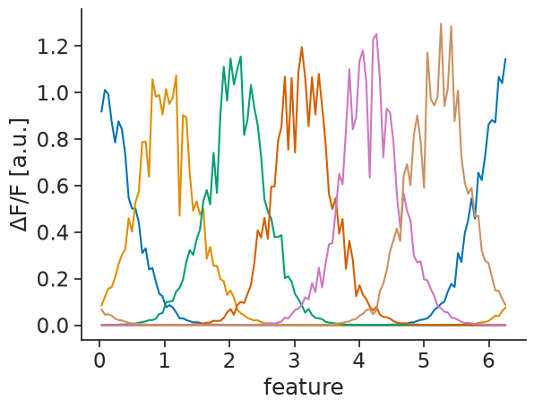
2D tuning curves from continuous activity#
This also works with more than one feature. Let us first simulate noisy continuous activity for some units modulated by the 2D variable:
alpha = np.arctan2(features["b"].values, features["a"].values) / np.pi
traces = np.exp(50.0 * np.cos(alpha[:, np.newaxis] - centers_2d)) / np.exp(50.0)
traces = traces * (1 + noise_level * np.random.randn(*traces.shape))
tsdframe_2d = nap.TsdFrame(t=times_feature, d=traces, columns=range(1, N+1, 1))
The same function again handles computing the tuning curves:
tuning_curves_2d_continuous = nap.compute_tuning_curves(
data=tsdframe_2d,
features=features,
bins=5,
feature_names=["a", "b"]
)
tuning_curves_2d_continuous
<xarray.DataArray (unit: 6, a: 5, b: 5)> Size: 1kB
array([[[2.13577708e-01, 6.26155139e-01, 4.15984747e-01, 4.14577873e-28,
5.63009753e-26],
[4.48197962e-02, nan, nan, nan,
3.50767990e-23],
[2.74955802e-03, nan, nan, nan,
2.34039912e-20],
[1.00012740e-04, nan, nan, nan,
2.39882889e-17],
[2.19947182e-06, 6.27994653e-08, 3.23949089e-10, 9.97887332e-13,
2.33466715e-15]],
[[6.08429767e-01, 2.03732822e-01, 1.76568183e-02, 1.98893216e-19,
2.21144133e-17],
[9.28987498e-01, nan, nan, nan,
1.00712394e-14],
[7.72056774e-01, nan, nan, nan,
4.11863678e-12],
[2.87986763e-01, nan, nan, nan,
1.16306195e-09],
[4.90020675e-02, 7.93099610e-03, 2.95667452e-04, 4.15767573e-06,
...
6.35306367e-01],
[1.12445983e-14, nan, nan, nan,
9.70514884e-01],
[4.47838311e-12, nan, nan, nan,
7.64077134e-01],
[1.27311640e-09, nan, nan, nan,
2.77295647e-01],
[6.31142900e-08, 4.84043451e-06, 2.42659031e-04, 7.41185368e-03,
5.60344809e-02]],
[[5.14215266e-26, 4.55335621e-28, 4.54551537e-01, 6.54502039e-01,
2.15266561e-01],
[3.25350184e-23, nan, nan, nan,
4.81599796e-02],
[2.78419149e-20, nan, nan, nan,
3.12658823e-03],
[2.22996540e-17, nan, nan, nan,
1.06266198e-04],
[2.48026608e-15, 9.91361175e-13, 2.94002349e-10, 6.36206039e-08,
2.18293205e-06]]])
Coordinates:
* unit (unit) int64 48B 1 2 3 4 5 6
* a (a) float64 40B -0.8 -0.4 1.11e-16 0.4 0.8
* b (b) float64 40B -0.8 -0.4 1.11e-16 0.4 0.8
Attributes: (3)tuning_curves_2d_continuous.name="ΔF/F"
tuning_curves_2d_continuous.attrs["unit"]="a.u."
tuning_curves_2d_continuous.plot(col="unit", col_wrap=3);
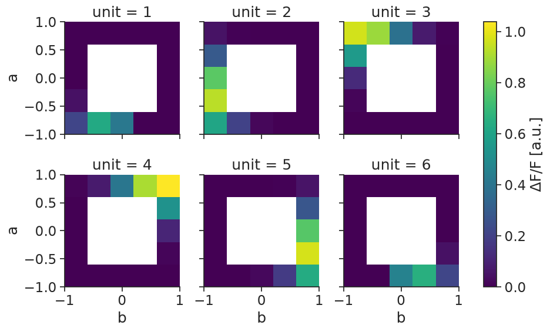
From epochs#
When computing from epochs, you should store them in a dictionary:
epochs_dict = {
"A": nap.IntervalSet(start=[0, 20, 40, 60, 80], end=[10, 29, 49, 69, 89]),
"B":nap.IntervalSet(start=[10, 30, 40, 60, 90], end=[19, 39, 59, 79, 99])
}
You can then compute the tuning curves using nap.compute_response_per_epoch.
You can pass either a TsGroup for spikes, or a TsdFrame for rates/calcium activity.
The output is an xarray.DataArray with labeled dimensions:
epochs_tuning_curves = nap.compute_response_per_epoch(tsgroup_2d, epochs_dict)
epochs_tuning_curves
<xarray.DataArray (unit: 6, epochs: 2)> Size: 96B
array([[2. , 1.8 ],
[3.82608696, 3.78461538],
[2.54347826, 2.44615385],
[3.02173913, 3.26153846],
[3.76086957, 3.83076923],
[1.84782609, 1.90769231]])
Coordinates:
* unit (unit) int64 48B 1 2 3 4 5 6
* epochs (epochs) <U1 8B 'A' 'B'We can visualize using barplots:
fig, axs = plt.subplots(
1, N, constrained_layout=True, sharey=True, figsize=(8, 3)
)
for unit, ax in zip(epochs_tuning_curves.coords["unit"], axs):
ax.bar(
epochs_tuning_curves.coords["epochs"],
epochs_tuning_curves.sel(unit=unit),
)
ax.set_title(f"unit {unit.item()}")
axs[0].set_xlabel("epoch")
axs[0].set_ylabel("firing rate [hz]");
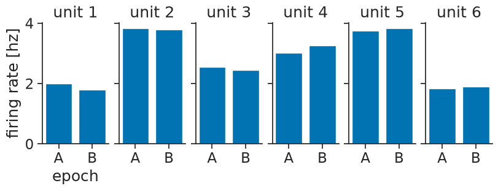
Error bars#
Often, you will want error bars on your tuning curves, to be able to quantify uncertainty. Pynapple does not provide explicit functions for this, but in this section we will show how you can easily compute error bars yourself, using the functions we introduced above.
From timestamps or continuous activity#
If you are computing tuning curves against features, you can split your session into n_splits,
compute a tuning curve per split, and then compute statistics over those.
We will start by creating splits:
n_splits = 4
full_session = feature.time_support
split_length = full_session.tot_length() / n_splits
splits = full_session.split(split_length)
splits
index start end
0 0 124.995
1 124.995 249.99
2 249.99 374.985
3 374.985 499.98
shape: (4, 2), time unit: sec.
Then, we can compute the tuning curves like before, by looping over the splits:
tuning_curves_per_split = [
nap.compute_tuning_curves(
tsgroup_1d,
epochs=split,
features=feature,
bins=120,
range=(0, 2 * np.pi),
feature_names=["feature"],
)
for split in splits
]
To make things easier down the line, we advise combining these into one big
xarray.DataArray using xarray.concat
, adding a dimension for the splits:
tuning_curves_per_split = xr.concat(tuning_curves_per_split, dim="split")
tuning_curves_per_split
<xarray.DataArray (split: 4, unit: 6, feature: 120)> Size: 23kB
array([[[19.19889503, 20.66666667, 15.2 , ..., 17.2 ,
16. , 18.59504132],
[ 1.24309392, 0.66666667, 3.2 , ..., 0.4 ,
2. , 1.51515152],
[ 0. , 0. , 0.4 , ..., 0. ,
0. , 0.13774105],
[ 0. , 0. , 0. , ..., 0. ,
0. , 0. ],
[ 0. , 0. , 0. , ..., 0. ,
0. , 0.13774105],
[ 1.38121547, 0.66666667, 0.8 , ..., 2.8 ,
1.66666667, 1.10192837]],
[[20.52341598, 20.33333333, 17.2 , ..., 17.2 ,
22. , 18.78453039],
[ 1.51515152, 2.33333333, 2. , ..., 0.8 ,
1.33333333, 1.10497238],
[ 0. , 0.33333333, 0. , ..., 0. ,
0. , 0. ],
[ 0. , 0. , 0. , ..., 0. ,
...
0. , 0. ],
[ 0. , 0. , 0. , ..., 0. ,
0. , 0. ],
[ 0. , 0. , 0. , ..., 0. ,
0. , 0. ],
[ 1.51933702, 1.66666667, 0.4 , ..., 4.4 ,
3.33333333, 1.37741047]],
[[17.63085399, 21. , 14.8 , ..., 16.8 ,
19. , 18.28254848],
[ 1.79063361, 1.66666667, 3.2 , ..., 0.4 ,
0. , 1.38504155],
[ 0. , 0. , 0. , ..., 0. ,
0. , 0. ],
[ 0. , 0. , 0. , ..., 0. ,
0. , 0. ],
[ 0. , 0. , 0. , ..., 0. ,
0.33333333, 0. ],
[ 1.23966942, 1.66666667, 1.2 , ..., 2.4 ,
0.33333333, 2.07756233]]], shape=(4, 6, 120))
Coordinates:
* unit (unit) int64 48B 1 2 3 4 5 6
* feature (feature) float64 960B 0.02618 0.07854 0.1309 ... 6.152 6.205 6.257
Dimensions without coordinates: split
Attributes: (4)Computing the mean and standard deviation can then be done easily using:
means = tuning_curves_per_split.mean(dim="split")
stds = tuning_curves_per_split.std(dim="split")
Visualizing also becomes more simple:
lines = means.plot.line(x="feature", add_legend=False)
for line, unit in zip(lines, means.coords["unit"]):
mean = means.sel(unit=unit)
std = stds.sel(unit=unit)
plt.fill_between(
means["feature"],
mean - std,
mean + std,
color=line.get_color(),
alpha=0.2,
)
plt.xlabel("feature [rad]")
plt.ylabel("firing rate [Hz]");
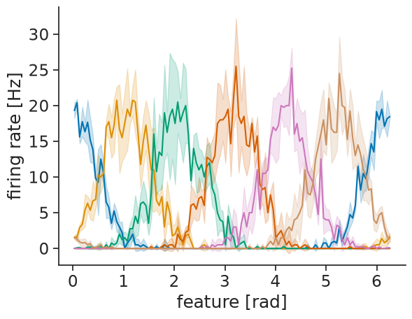
To make things easier in the future, here is a function that does all of this:
def compute_tuning_curves_with_error_bars(
data, features, bins, range, feature_names, n_splits
):
# Get splits
full_session = features.time_support
split_length = full_session.tot_length() / n_splits
splits = full_session.split(split_length)
# Compute tuning curves per split
tuning_curves_per_split = [
nap.compute_tuning_curves(
data,
features=features,
epochs=split,
bins=bins,
range=range,
feature_names=feature_names,
)
for split in splits
]
tuning_curves_per_split = xr.concat(tuning_curves_per_split, dim="split")
# Return mean and standard deviation
return (
tuning_curves_per_split.mean(dim="split"),
tuning_curves_per_split.std(dim="split")
)
Feel free to extend it to your needs!
From epochs#
If you want error bars for epochs, the typical use-case will be that you have multiple presentations of a stimulus, and you want the mean response over those:
epochs_dict
{'A': index start end
0 0 10
1 20 29
2 40 49
3 60 69
4 80 89
shape: (5, 2), time unit: sec.,
'B': index start end
0 10 19
1 30 39
2 40 59
3 60 79
4 90 99
shape: (5, 2), time unit: sec.}
So, we can use nap.compute_response_per_epoch in a loop to compute that:
epochs_tuning_curves_per_presentation = [
nap.compute_response_per_epoch(
tsgroup_2d, {"A": stimulus_A, "B": stimulus_B}
)
for stimulus_A, stimulus_B in zip(epochs_dict["A"], epochs_dict["B"])
]
To make things easier down the line, we advise combining these into one big
xarray.DataArray using xarray.concat
, adding a dimension for the presentations:
epochs_tuning_curves_per_presentation = xr.concat(
epochs_tuning_curves_per_presentation, dim="presentation"
)
epochs_tuning_curves_per_presentation
<xarray.DataArray (presentation: 5, unit: 6, epochs: 2)> Size: 480B
array([[[1.7 , 2.11111111],
[3.7 , 4.44444444],
[3.3 , 2. ],
[3.5 , 3.33333333],
[4. , 4.22222222],
[2.3 , 1.66666667]],
[[2.11111111, 1.55555556],
[3.88888889, 3.44444444],
[2.22222222, 2.44444444],
[2.77777778, 3.77777778],
[3.77777778, 4.33333333],
[1.33333333, 1.77777778]],
[[2.22222222, 1.94736842],
[3.66666667, 3.47368421],
[2.11111111, 2.57894737],
[3.11111111, 3.47368421],
[2.88888889, 3.15789474],
[2. , 1.94736842]],
[[1.66666667, 1.57894737],
[4. , 4. ],
[2.22222222, 3.10526316],
[2.55555556, 2.89473684],
[3.88888889, 3.63157895],
[1.88888889, 1.89473684]],
[[2.33333333, 1.88888889],
[3.88888889, 3.66666667],
[2.77777778, 1.22222222],
[3.11111111, 3. ],
[4.22222222, 4.77777778],
[1.66666667, 2.22222222]]])
Coordinates:
* unit (unit) int64 48B 1 2 3 4 5 6
* epochs (epochs) <U1 8B 'A' 'B'
Dimensions without coordinates: presentationWe can then visualize again, but now with error bars:
means = epochs_tuning_curves_per_presentation.mean(dim="presentation")
stds = epochs_tuning_curves_per_presentation.std(dim="presentation")
fig, axs = plt.subplots(
1, N, constrained_layout=True, sharey=True, figsize=(8, 3)
)
for unit, ax in zip(epochs_tuning_curves.coords["unit"], axs):
ax.bar(
means.coords["epochs"], means.sel(unit=unit), yerr=stds.sel(unit=unit)
)
ax.set_title(f"unit {unit.item()}")
axs[0].set_xlabel("epoch")
axs[0].set_ylabel("firing rate [Hz]");
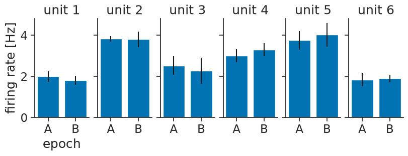
To make things easier in the future, here is a function that does all of this:
def compute_response_per_epoch_with_error_bars(data, epochs_dict):
epochs_dict_per_presentation = [
dict(zip(epochs_dict.keys(), presentations))
for presentations in zip(*epochs_dict.values())
]
epochs_tuning_curves_per_presentation = [
nap.compute_response_per_epoch(data, presentation_epochs_dict)
for presentation_epochs_dict in epochs_dict_per_presentation
]
epochs_tuning_curves_per_presentation = xr.concat(
epochs_tuning_curves_per_presentation, dim="presentation"
)
return (
epochs_tuning_curves_per_presentation.mean(dim="presentation"),
epochs_tuning_curves_per_presentation.std(dim="presentation"),
)
Feel free to extend it to your needs!
Mutual information#
Given a set of tuning curves, you can use compute_mutual_information to compute the mutual information between the activity of the neurons and the features, no matter what dimension.
See the Skaggs et al. (1992) paper for more information on what mutual information computes.
MI = nap.compute_mutual_information(tuning_curves_1d)
MI
| bits/sec | bits/spike | |
|---|---|---|
| 1 | 7.475872 | 1.020417 |
| 2 | 5.257306 | 1.470928 |
| 3 | 5.283338 | 2.166992 |
| 4 | 5.588007 | 2.385903 |
| 5 | 5.348550 | 2.172354 |
| 6 | 5.157401 | 1.460962 |
MI = nap.compute_mutual_information(tuning_curves_2d)
MI
| bits/sec | bits/spike | |
|---|---|---|
| 1 | 4.059739 | 2.346576 |
| 2 | 5.888144 | 1.714592 |
| 3 | 5.930981 | 1.665939 |
| 4 | 6.000894 | 1.718400 |
| 5 | 6.020070 | 1.722905 |
| 6 | 4.131967 | 2.326465 |
Take a look at the tutorial on head direction cells for a realistic example.